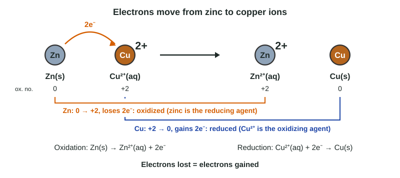

Drop a strip of zinc into blue copper(II) sulfate solution and within minutes the zinc is coated in red-brown copper while the blue color fades. Nothing was mixed except a metal and a solution, yet electrons have moved from one to the other. Reactions that move electrons are called redox reactions. They run batteries, corrode metals and power living cells, and Unit 9 builds electrochemistry on them. This page gives the tools: oxidation numbers, the language of oxidation and reduction, and balancing with half-reactions.
Oxidation and reduction

In the zinc and copper reaction (Figure 1), each zinc atom gives two electrons to a Cu²⁺ ion:
Zn(s) + Cu²⁺(aq) → Zn²⁺(aq) + Cu(s)
- Oxidation is the loss of electrons. Zinc is oxidized.
- Reduction is the gain of electrons. Copper(II) ions are reduced.
The two always happen together, because electrons given up by one particle must go to another. A reaction with both is a redox reaction (reduction-oxidation). The word "oxidation" once meant combining with oxygen, but oxygen need not be involved: there is none in the reaction above.
Oxidation numbers
In ion reactions like the one above, you can see the electrons move from the charges. In molecules, electrons are shared, so chemists use a bookkeeping number, the oxidation number (or oxidation state): the charge an atom would have if every bond were ionic, with each shared pair given to the more electronegative atom. Assign them with these rules, in order:
- An atom in an element (Zn, O₂, Cl₂) is 0.
- A monatomic ion equals its charge (Na⁺ is +1, Cl⁻ is −1, Fe³⁺ is +3).
- Oxygen is usually −2 (except in peroxides such as H₂O₂, where it is −1).
- Hydrogen is +1 when bonded to nonmetals (and −1 in metal hydrides such as NaH).
- The oxidation numbers add up to the charge of the species: 0 for a compound, the ion's charge for a polyatomic ion.
Worked example. Find the oxidation number of manganese in MnO₄⁻ and of chromium in Cr₂O₇²⁻.
MnO₄⁻: four O at −2 give −8. The total must be −1: Mn + (−8) = −1, so Mn = +7.
Cr₂O₇²⁻: seven O at −2 give −14. The total must be −2: 2Cr + (−14) = −2, so 2Cr = +12 and each Cr = +6.
Now redox is easy to spot. If an element's oxidation number rises from reactants to products, that element is oxidized; if it falls, it is reduced. If no oxidation number changes, the reaction is not redox. A precipitation such as Ag⁺ + Cl⁻ → AgCl and an acid-base reaction such as H⁺ + OH⁻ → H₂O have no changes.
Worked example. In Fe₂O₃(s) + 3CO(g) → 2Fe(s) + 3CO₂(g), what is oxidized and what is reduced?
Iron: +3 in Fe₂O₃ (2Fe + 3(−2) = 0), 0 in Fe. It falls, so iron is reduced.
Carbon: +2 in CO (C − 2 = 0), +4 in CO₂ (C − 4 = 0). It rises, so carbon is oxidized.
Oxygen stays −2 throughout.
Oxidizing and reducing agents
An agent is what causes a change in something else.
- The oxidizing agent takes electrons from another species, causing it to be oxidized. In doing so the oxidizing agent is reduced.
- The reducing agent gives electrons to another species, causing it to be reduced. The reducing agent is oxidized.
In Zn + Cu²⁺ → Zn²⁺ + Cu, Cu²⁺ is the oxidizing agent and Zn is the reducing agent. Name the whole species (Cu²⁺, MnO₄⁻), not just the element whose number changes.
Experiments can rank how readily metals give up electrons. Magnesium metal reduces Zn²⁺, Cu²⁺ and Ag⁺ ions; zinc reduces Cu²⁺ and Ag⁺; copper reduces only Ag⁺; silver reduces none of them. So the ease of losing electrons runs Mg > Zn > Cu > Ag. Unit 9 puts numbers on this ranking.
Balancing with half-reactions
A half-reaction shows only the oxidation or only the reduction, with the electrons written in:
Oxidation: Al(s) → Al³⁺(aq) + 3e⁻
Reduction: Cu²⁺(aq) + 2e⁻ → Cu(s)
Electrons are not created or destroyed, so the electrons lost must equal the electrons gained. That condition, not just atom counts, balances a redox equation.
Worked example. Combine the two half-reactions above.
1. Electrons: 3 lost per Al, 2 gained per Cu²⁺. The least common multiple is 6.
2. Multiply the oxidation by 2 and the reduction by 3: 2Al → 2Al³⁺ + 6e⁻ and 3Cu²⁺ + 6e⁻ → 3Cu.
3. Add, and cancel the 6e⁻: 2Al(s) + 3Cu²⁺(aq) → 2Al³⁺(aq) + 3Cu(s).
4. Check atoms (2 Al, 3 Cu each side) and charge (+6 each side). Electrons never appear in the final equation.
An equation such as Al + Cu²⁺ → Al³⁺ + Cu balances in atoms but not in charge (+2 and +3), which is the sign that electrons lost and gained do not match.
Redox titrations
Redox reactions can be used in titrations exactly as acid-base reactions are. Potassium permanganate is a favorite titrant because the MnO₄⁻ ion is deep purple and its product, Mn²⁺, is almost colorless: the first drop in excess turns the solution pink, so it is its own indicator.
Worked example. 25.00 mL of acidified Fe²⁺ solution needs 21.63 mL of 0.02000 M KMnO₄. MnO₄⁻ + 5Fe²⁺ + 8H⁺ → Mn²⁺ + 5Fe³⁺ + 4H₂O. Find the molarity of Fe²⁺.
Moles MnO₄⁻ = 0.02000 mol/L × 0.02163 L = 4.326 × 10⁻⁴ mol.
Moles Fe²⁺ = 4.326 × 10⁻⁴ mol MnO₄⁻ × (5 mol Fe²⁺ / 1 mol MnO₄⁻) = 2.163 × 10⁻³ mol.
Molarity = 2.163 × 10⁻³ mol ÷ 0.02500 L = 0.08652 M.
Check the electrons: Mn goes from +7 to +2 (5 gained per MnO₄⁻); each Fe goes from +2 to +3 (1 lost). Five Fe²⁺ per MnO₄⁻ balances them.